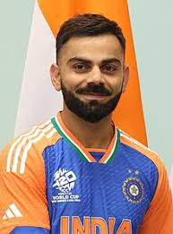
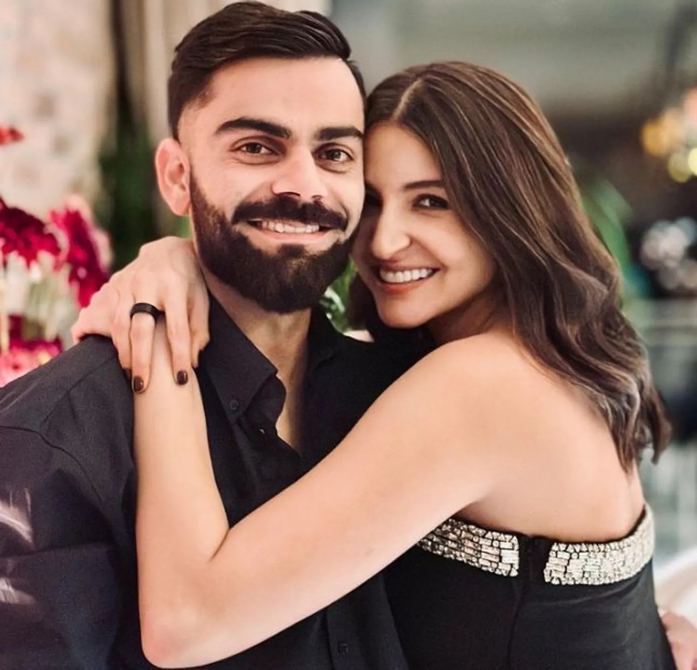

| Birth |
5 November 1988 |
| Age |
36 Years |
| Nickname |
Chiku |
| Education |
Vishal Bharati Public School, Savior Convent |
| Height |
5 ft 9 inch |
| Profession |
Crickter |
| Batting style |
Right-handed batter |
| Bowling style |
Right-arm medium bowler |
| Net Worth |
Rs. 1080 crore (approx) |
| Instagram |
@virat.kohli |
| Awards |
Arjuna Award, Padma Shri, Rajiv Gandhi Khel Ratna Award |
FAMILY
| Relationship |
Name |
| Father |
Prem Kohli |
| Mother |
Saroj Kohli |
| Elder Brother |
Vikas Kohli |
| Elder Sister |
Bhawna Kohli Dhingra |
| Wife |
Anuska Sharma |
| Daughter |
Vamika Kohli |
| Son |
Akaay |
Virat Kohli was born into a Punjabi family to his father, Prem Kohli
and mother, Saroj Kohli. His father passed away in 2006 due to a
stroke at the age of 54 and was working as a criminal lawyer whereas
his mother is a homemaker.
Virat Kohli's mother, Saroj Kohli is a housewife. Virat is very
close to his mother. When Virat started to focus on his fitness, his
mother was worried that her son was becoming weaker. Virat had also
worn a jersey with his mother's name on the back during an ODI
against New Zealand in 2016.

Virat Kohli's father, Prem Kohli was a criminal lawyer. He took
him to the West Delhi Cricket Academy after neighbors advised that
Virat was ready to play for a professional club. Unfortunately,
Prem passed away before Kohli played for India. Prem died on
December 18, 2006, when Virat was playing in the Ranji Trophy.
Showing his commitment, Virat continued to play for Delhi soon
after performing the last rites.
Virat Kohli has an elder brother named Vikas Kohli. According to
Stars Unfolded, Vikas is an actor. Vikas is married to Chetna
Kohli and they have a son named Aarav Kohli. Just like Virat,
Vikas is a fitness freak.
Virat Kohli has an elder sister named Bhawna Kohli. Bhawna is
married to Sanjay Dhingra. The couple got married in 2002 and
they have two children named Ayush and Mehak. Bhawna studied at
Hansraj Model School in New Delhi and graduated from Daulat Ram
College.


Virat Kohli is married to Bollywood actress Anushka Sharma. The two
celebrities dated each other for quite some time before getting
hitched in December 2017. They married in Florence, Italy.
In January 2021, Anushka Sharma gave birth to her daughter Vamika
Kohli. Virat and Anushka have decided against revealing their
daughter's face to the public. When Virat shared the news of their
daughter's birth on Instagram, the post received over 6.5 million
likes. On February 15th, 2024, Anushka Sharma gave birth to her son
Akaay and revealed the same from their official social media handles
respectively. When Virat shared the news of their daughter's birth
on Instagram, the post received over 8 million likes and it is still
counting.
EARLY LIFE
Virat is the third child of the couple, with one elder brother-
Vikas Kohli, and an elder sister- Bhawna Kohli. Virat spent most of
his childhood in Delhi and also got his training in the national
capital. And it was this training, hard work, and persistence that
led him to the heights of success.
When West Delhi Cricket Academy was created in 1998, Kohli was part
of its first batch and received training under Rajkumar Sharma.
Kohli made his cricket debut in October 2002 with the Delhi Under-15
team in the 2002-03 Polly Umrigar Trophy and lead the team for the
next trophy. He was later selected in the Delhi Under-17 team for
the 2003-04 Vijay Merchant Trophy where he finished as the highest
run-scorer.
At the age of 18, Kohli made his first-class debut for Delhi against
Tamil Nadu wherein he scored 10 runs. In July 2006, he made his
debut in the Under-19 team during India's tour of England. India won
both ODI and Test series. Kohli made his T20 debut next year and
emerged as the highest run-scorer in the Inter-State T20
Championship with 179 runs.
The year 2008 was a life-changing year for Kohli. First, he
captained the Under-19 Cricket World Cup-winning team. Second, he
was bought by RCB for $30,000 on a youth contract for IPL. Third, he
made his international debut.
After recovering from a minor injury, Kohli replaced Gambhir for the
tri-series in Sri Lanka and batter at no. 4 in the 2009 ICC
Champions Trophy as Yuvraj Singh was recovering from an injury.
For the tri-nation ODI tournament in Bangladesh in 2010, Tendulkar
was rested, thereby enabling Kohli to play in each match. Due to his
phenomenal performance in Bangladesh, he was praised by the then
captain MS Dhoni.
Kohli was part of the World Cup-winning team in 2011 and became the
first Indian batsman to score a century on World Cup debut.
Kohli made his Test debut against West Indies at Kingston and
performed poorly in the series, amassing just 76 runs in five
innings. In 2015, he became the first Indian batsman to score a
century against Pakistan in a World Cup match.
CAREER
During South Africa's tour of India, he became the fastest batsman
in the world to make 1,000 runs in T20I cricket, achieving the feat
in his 27th innings.
During the ODI tour of Australia, Kohli emerged as the fastest
batsman in the world to cross the 7000-run mark in ODIs, and the
fastest to score 25 centuries.
During the 3 match Test series against Sri Lanka at home in 2017, he
became the first batsman to score six double hundreds as a captain.
That year, he scored a total of 2818 international runs, the
third-highest by an Indian in a calendar year and highest ever by an
Indian player.
In August 2018, he ranked no. 1 in the ICC Test rankings. With this,
he became the seventh Indian batter to achieve this milestone. He
became the first Indian, first captain and tenth overall to hit
three successive centuries in ODIs in October 2018.
For the tri-series in Zimbabwe in 2010, Raina was named captain
while Kohli was made vice-captain. During this, he emerged as the
fastest Indian batsman to reach 1,000 ODI runs.
He was appointed as vice-captain for the 2012 Asia Cup due to his
excellent performance in Australia.
Kohli captained the 2013 West Indies tri-series winning team after
Dhoni injured himself during the match. He also captained a
five-match ODI tour of Zimbabwe, which India won by 5-0, their first
in any away ODI series.
He was named vice-captain for the 2014 ICC World T20 Competition
where India emerged as the runner ups and Kohli as Man of the
Tournament as he amassed 319 runs in the tournament.
He led India in the five-match ODI series against Sri Lanka which
India won by 5-0. It was the second whitewash under his captaincy
and fourth in India's ODI history.
He led India in the first Test of the Australian tour and scored 115
runs in the first innings, thereby becoming the fourth Indian to
score a hundred on his Test captaincy debut. Dhoni announced his
retirement from Test cricket at the conclusion of the third match
between India and Australia, and Kohli was appointed as the
full-time Test captain ahead of the fourth Test at Sydney.
At Sydney, Kohli scored 147 in the first innings and became the
first batter in the Test cricket history to score three hundred in
his first three innings as Test captain. He was named as captain of
the 'Team of the Tournament' for the 2016 World Twenty20 by the ICC.
He captained India in the 2017 ICC Champions Trophy. India entered
the finals but lost to Pakistan. Kohli also captained the 2019
Cricket World Cup where India failed to reach the finals after
losing the semi-final match against New Zealand. India's first
whitewash under Kohli's captaincy was India's tour of New Zealand in
2020.
India lost the 2021 ICC World Test Championship Final to New
Zealand, Kohli's third defeat as captain in knockouts and finals of
ICC tournaments. India failed to make it through the semi-finals in
the ICC Men's T20 World Cup 2021 under Kohli's captaincy.
He also captained Royal challengers Bangalore for 8 seasons in IPL
but failed to win a trophy.
VIRAT KOHLI : DEBUT
| Format |
Debut |
| Test |
20 June 2011 against West Indies |
| ODI |
18 August 2008 against Sri Lanka |
| T20I |
12 June 2010 against Zimbabwe |
VIRAT KOHLI STATS
BATTING SUMMERY
| Format |
Matches |
Innings |
Runs |
Highest Score |
100s |
50s |
| Test |
99 |
168 |
7962 |
254 (not out) |
27 |
28 |
| ODI |
254 |
245 |
12169 |
183 |
43 |
62 |
| T20I |
95 |
87 |
3227 |
94 (not out) |
0 |
29 |
| FC |
131 |
216 |
10211 |
254 (not out) |
34 |
36 |
| List A |
288 |
278 |
13611 |
183 |
47 |
70 |
| T20 |
324 |
307 |
10204 |
113 |
5 |
75 |
BOWLING SUMMERY
| Format |
Matches |
Innings |
Balls |
Runs |
wickets |
| Test |
99 |
11 |
175 |
84 |
0 |
| ODI |
254 |
48 |
641 |
665 |
4 |
| T20I |
95 |
12 |
146 |
198 |
4 |
| FC |
131 |
25 |
643 |
338 |
3 |
| List A |
288 |
55 |
705 |
726 |
4 |
| T20 |
324 |
44 |
454 |
661 |
8 |
VIRAT KOHLI AWARDS AND HONOURS
NATIONAL AWARDS
Virat Kohli won Arjuna Award in 2013, Padma Shri in 2017 and Rajiv
Gandhi Khel Ratna Award in 2018.
SPORTS AWARDS
- Sir Garfield Sobers Trophy (ICC Men's Cricketer of the Decade) in 2011-2020
- Sir Garfield Sobers Trophy (ICC Cricketer of the Year) in 2017
- ICC ODI Player of the Year in 2012
- ICC Test Player of the Year in 2018
- ICC ODI Team of the Year in 2012, 2014, 2016 (captain), 2017 (captain), 2018 (captain), 2019 (captain)
- ICC Test Team of the Year in 2017 (captain), 2018 (captain), 2019 (captain)
- ICC Spirit of Cricket in 2019
- ICC Men's ODI Cricketer of the Decade in 2011-2020
- ICC Men's Test Team of the Decade in 2011-2020 (captain)
- ICC Men's ODI Team of the Decade in 2011-2020
- ICC Men's T20I Team of the Decade in 2011-2020
- Polly Umrigar Award for International Cricketer of the Year in 2011-12, 2014-15, 2015-16, 2016-17, 2017-18
- Wisden Leading Cricketer in the World in 2016, 2017, 2018
- CEAT International Cricketer of the Year in 2011-12, 2013-14, 2018-19
- Barmy Army - International Player of Year in 2017, 2018
OTHER AWARDS
- People's Choice Awards India For Favourite Sportsperson in 2012
- CNN-News18 Indian of the Year in 2017
- DDCA renamed a stand after him at Arun Jaitley stadium, Delhi.